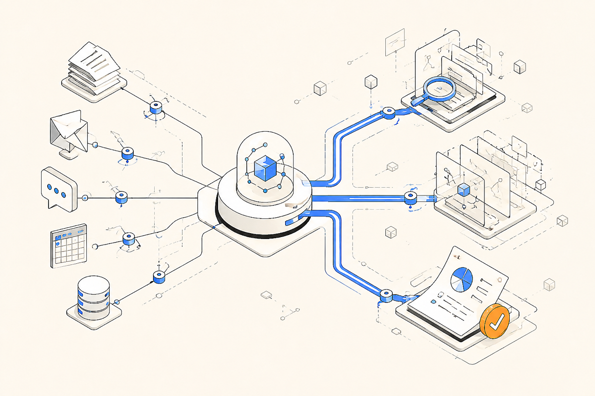
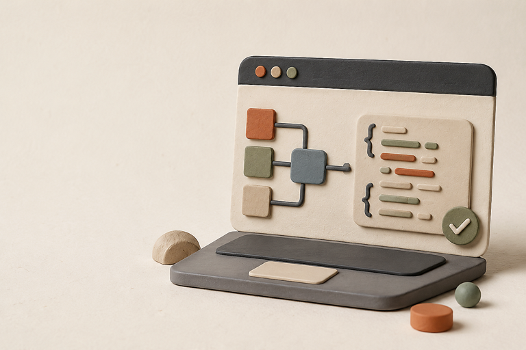

STEP 01↗
理解目标
识别任务、上下文、约束与交付标准，而不是机械匹配关键词。
专业工作场景
有边界的专业角色
连接真实工具与数据
开放能力协议
你只负责描述目标。MCPP Market 将复杂工作拆成可检查的步骤，调用真实工具推进，并把过程与结果留在同一个工作空间。
识别任务、上下文、约束与交付标准，而不是机械匹配关键词。
读取文件、搜索资料、运行代码、连接应用，持续推动任务完成。
产出文档、表格、分析、代码和设计稿，让工作有明确终点。

任务计划、工具调用、信息来源和交付结果都清晰可见。你可以随时检查、调整或接管。
研究选题、统一风格、完成多渠道内容
清洗数据、识别问题、形成行动建议

理解代码、实现功能、运行测试并交付
场景是共同入口。选择需要完成的工作，找到懂行的专家，再连接完成任务需要的数据与工具。
授权范围透明、敏感操作确认、连接随时撤销、过程完整可查。
只申请完成当前任务所需要的数据范围与动作。
发送、修改和删除等敏感操作由你最终决定。
连接统一管理，完整保留信息来源和操作过程。